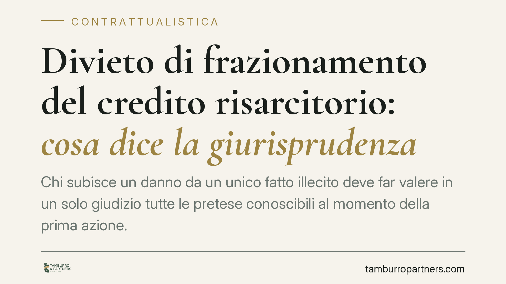

Divieto di frazionamento del credito risarcitorio: cosa dice la giurisprudenza
Chi subisce un danno da un unico fatto illecito deve far valere in un solo giudizio tutte le pretese conoscibili al momento della prima azione. Le Sezioni Unite hanno chiarito che la domanda frazionata è improponibile, non semplicemente respinta nel merito. Restano fuori solo i danni sopravvenuti e imprevedibili. Un principio che incide su strategie processuali in materia risarcitoria e giuslavoristica.

Il caso
La questione ricorre spesso nei contenziosi risarcitori: dopo aver ottenuto una prima pronuncia su parte dei danni derivanti da un medesimo fatto, la parte tenta di recuperare in un secondo giudizio le voci non azionate inizialmente. È accaduto, ad esempio, in una vicenda promossa dall'erede di un lavoratore deceduto nei confronti dell'azienda datrice di lavoro, con richieste distinte proposte in tempi successivi.
La risposta della giurisprudenza è netta: il credito risarcitorio nascente da un unico fatto illecito non può essere suddiviso in più cause. La sanzione non è il rigetto del merito, ma l'improponibilità della domanda frazionata.
Inquadramento normativo
Il fondamento sostanziale resta negli artt. 2043 c.c. (risarcimento del fatto illecito) e 1223 c.c. (danno emergente e lucro cessante come componenti di un unico credito da liquidare integralmente).
Il divieto di frazionamento, tuttavia, non poggia sulla cosa giudicata formale (art. 324 c.p.c.), bensì su princìpi di sistema. Le Sezioni Unite lo hanno costruito sulla clausola di correttezza e buona fede (artt. 1175 e 1375 c.c.) e sul principio del giusto processo e della sua ragionevole durata (art. 111 Cost.). La suddivisione artificiosa di un credito unitario integra un abuso del processo: costringe il debitore a difendersi più volte sulla stessa vicenda e moltiplica i giudizi senza ragione meritevole di tutela.
Due sono i riferimenti fondamentali. Con Cass. SS.UU. n. 23726/2007 è stato affermato che il creditore di una somma unitaria non può frazionarla in più domande. Con Cass. SS.UU. n. 4090/2017 il principio è stato esteso ai crediti distinti ma riconducibili a un unico rapporto: possono essere azionati separatamente solo se ciò risponde a un interesse oggettivamente valutabile, e in ogni caso la trattazione va di regola concentrata nel primo giudizio. Il giudicato sostanziale (art. 2909 c.c.) preclude poi il riesame di quanto già deciso.
L'eccezione: i danni sopravvenuti imprevedibili
Il divieto non è assoluto. Restano proponibili in un giudizio successivo i danni sopravvenuti e non prevedibili al momento della prima azione.
Il criterio decisivo è la conoscibilità: se un pregiudizio era già percepibile o accertabile quando si è proposta la prima domanda, andava fatto valere allora. Se invece si è manifestato dopo, in modo non prevedibile secondo l'ordinaria diligenza, la sua richiesta autonoma è legittima.
La prova di questa sopravvenienza grava su chi agisce nel secondo giudizio. Non basta affermare di non aver quantificato una voce: occorre dimostrare che essa non era conoscibile prima.
Implicazioni pratiche
Per chi subisce un danno — dal lavoratore all'impresa parte di un rapporto contrattuale — la conseguenza è concreta: la strategia va definita a monte. Presentare per prime le sole voci di più agevole quantificazione, riservando le altre a un contenzioso successivo, espone al rischio che le domande residue vengano dichiarate improponibili.
Per il debitore convenuto, il principio offre uno strumento difensivo: l'eccezione di frazionamento consente di chiudere in via preliminare le pretese suddivise senza necessità di discutere il merito.
Cosa fare in concreto
- Mappare tutte le voci di danno riconducibili al medesimo fatto prima di proporre la domanda: danno patrimoniale, non patrimoniale, emergente e lucro cessante.
- Concentrare le pretese in un unico giudizio, salvo esistano ragioni oggettive e dimostrabili per una trattazione separata.
- Documentare la data di conoscibilità di ciascun pregiudizio, così da poter giustificare l'eventuale azione successiva per danni sopravvenuti.
- Verificare le cause pendenti: dove sia in corso un contenzioso su un credito unitario, valutare l'integrazione delle domande nei termini processuali consentiti.
- Nel ruolo di convenuto, sollevare tempestivamente l'eccezione di improponibilità per frazionamento, che va proposta senza ritardo.
In sintesi
Il credito risarcitorio da unico fatto illecito è indivisibile: tutte le pretese conoscibili vanno azionate insieme, pena l'improponibilità di quelle rinviate. L'unica valvola è rappresentata dai danni sopravvenuti e imprevedibili, da provare con rigore. La regola premia chi imposta il contenzioso in modo completo fin dall'inizio.
Ogni contratto ha il suo equilibrio.
Se vuoi una revisione delle clausole o una redazione su misura, scrivi allo studio. Ti rispondiamo entro un giorno lavorativo.